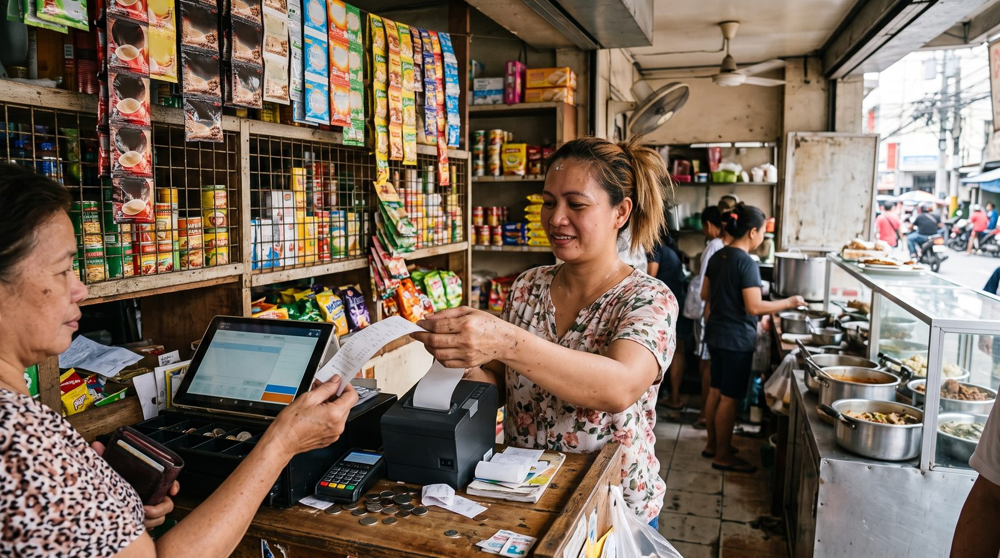

BIR-Accredited POS System in the Philippines: The Plain-English Guide
If you run a shop, café or restaurant in the Philippines and you've Googled "BIR accredited POS system" or "POS machine BIR registration," you've probably hit a wall of legal jargon. This guide cuts through it: what the Bureau of Internal Revenue actually requires from a point-of-sale system, how accreditation and the Permit to Use work, what happens if you skip it, and how to pick a POS that won't get you flagged during tax mapping.

What "BIR-accredited POS" really means
In everyday talk, a "BIR-accredited POS" is a cash register or point-of-sale system that the BIR has approved for issuing official invoices. But there are really two separate steps hiding inside that phrase, and mixing them up is the most common source of confusion:
- Accreditation, done by the supplier or software vendor. The BIR evaluates the POS software (and sometimes the bundled hardware) against its technical standards and adds the vendor to its list of accredited suppliers.
- Permit to Use (PTU), done by you, the business owner. Even if the software is accredited, your specific machine or installation must be registered with your RDO, after which BIR issues a Permit to Use decal that you stick on the machine in a visible spot.
So the right question isn't only "Is this POS BIR-accredited?" but also "Have I secured a Permit to Use for it?" You need both before you ring up a single official sale.
Do you actually need a POS machine at all?
Not every business is required to own a cash register or POS. Plenty of micro and small sellers in the Philippines still legally use BIR-registered manual or loose-leaf invoices. The legal trigger is simple: the moment you use a cash register or POS machine to generate invoices or receipts, that machine falls under BIR's registration rules and must carry a Permit to Use.
In practice, most growing shops and restaurants move to a POS anyway, it's faster, it cuts errors, and it makes the monthly tax filing far less painful. The key is to make sure the POS you choose can be brought into compliance, rather than discovering later that it can't generate a BIR-acceptable invoice.
The rules behind it, in plain English
You don't need to memorize regulation numbers, but it helps to know the landscape your accountant is working in:
The CRM/POS accreditation rules
The framework for accrediting and registering Cash Register Machines (CRM) and POS machines has been around for years, long-standing revenue regulations (commonly referenced as RR 10-99 and later RR 11-2004) set out that sales machines and the software generating receipts/invoices must be accredited and registered before use. BIR has since modernized the workflow through its eAccReg (machine registration) and eSales (sales reporting) online systems.
The "invoice replaces official receipt" change (EoPT Act)
This is the big recent shift many owners missed. Under the Ease of Paying Taxes (EoPT) Act and its implementing rules (notably RR 7-2024, effective April 27, 2024, later adjusted by RR 11-2024), the invoice, not the old "Official Receipt", became the primary document evidencing a sale, including the sale of services. Businesses were allowed to convert remaining Official Receipts (by striking through the words "Official Receipt" and stamping "Invoice") or use them up under transitory rules. If your POS still prints documents headed only "Official Receipt" for services, that's a red flag to raise with your provider.
How accreditation and registration actually work
At a high level, the journey looks like this. (Steps and forms can vary by RDO, so treat this as a map, not gospel.)
- Pick an accredited POS vendor. Start from BIR's list of accredited suppliers, or ask any vendor for proof of their accreditation.
- Vendor handles software accreditation. If the product isn't yet accredited, the supplier files for it with BIR.
- You apply for a Permit to Use. Typically using BIR Form 1900, filed with your RDO, together with supporting documents, a sample invoice/receipt showing the correct header (business name, TIN, branch code) and a sample "Z-reading" end-of-day report.
- BIR reviews and issues the PTU decal. You affix it permanently on the machine in a conspicuous place.
- You report sales monthly through the eSales portal and keep the required books, so your reported figures match your POS data.
Expect to budget both time (often several weeks for review and decal issuance) and fees. Published guides commonly cite a per-device registration cost in the order of roughly PHP 4,000 plus VAT, but figures vary and change, confirm the current amount with your RDO before relying on it.
Choosing a POS before you tackle BIR paperwork?
Start with a system that's modern, cloud-based and quick to set up, then bring it into compliance with your RDO.
Explore digabloPos, free to startE-invoicing and the EIS: where things are heading
The biggest 2025-2026 development is the move toward electronic invoicing. Under RR 11-2025, BIR rolled out a mandatory e-invoicing framework built around the Electronic Invoicing System (EIS) and electronic sales reporting. In broad strokes:
- Covered taxpayers must be able to generate invoices in a structured electronic format (JSON) and transmit them to BIR.
- The scope leans toward large taxpayers, e-commerce sellers and certain categories first, with micro businesses generally exempt, but the net widens over time.
- Deadlines have shifted: a follow-up regulation (RR 26-2025) reportedly extended key compliance dates toward end of 2026. Verify the timeline that applies to your business size.
The practical takeaway for owners: even if e-invoicing isn't mandatory for you yet, choose a POS that is cloud-based and able to export structured data. A modern system can adapt to EIS far more easily than an old offline-only register.
What happens if you get it wrong
BIR conducts "tax mapping" visits, and non-compliant POS setups are an easy catch. Published BIR compromise-penalty schedules and guides reference figures such as:
| Violation | Typical published penalty* |
|---|---|
| Using an unregistered CRM/POS machine | ~PHP 25,000 per unit (up to ~PHP 50,000) |
| No authorization sticker / decal displayed | ~PHP 1,000 per unit |
| Failure to issue an invoice/receipt | ~PHP 10,000-20,000 |
| Refusal to issue an invoice/receipt | ~PHP 25,000-50,000 |
*Indicative figures drawn from publicly available BIR penalty schedules and tax-advisory summaries. Penalties are periodically revised and BIR may also revoke a Permit to Use. Always confirm current amounts with BIR or a tax professional.
The cost of compliance is almost always smaller than the cost of a tax-mapping penalty, plan it in from day one, not after the fact.
Features to look for in a Philippine POS
Beyond the compliance box-ticking, the right POS should make daily trading easier. Here's what matters most for shops and restaurants here:
Non-negotiables
- Compliant invoicing output, correct headers, TIN, sequential numbering, VAT/non-VAT split, and the ability to produce Z-readings.
- A clear compliance path, the vendor can show accreditation and help you secure your Permit to Use.
- Structured data export, future-proofs you for EIS e-invoicing.
Strongly recommended
- Offline mode, Philippine internet can drop mid-rush; you should keep selling and auto-sync later.
- Restaurant tools, floor plan, table management and kitchen orders if you do dine-in.
- No forced payment commission, keep 100% of your card and e-wallet sales instead of bleeding a percentage on every transaction.
- Fast setup and fair pricing, ideally a free base plan so you can start small and add modules as you grow.
For grounding, popular options in the local market include Loyverse, StoreHub, UTAK, HashMicro, Klikit and KwikPOS, alongside global players like Square. They differ widely on price, restaurant depth and how they handle BIR compliance, so compare on your real needs, not the brand name.
How to choose, and where digabloPos fits
A sensible decision path: (1) confirm whether you need a registered machine at all, (2) shortlist POS tools that can output BIR-compliant invoices and that you can actually afford to run, (3) check each vendor's accreditation and the Permit-to-Use support they offer, then (4) trial the day-to-day experience before committing.
digabloPos
digabloPos is a modern, compliance-ready cloud POS that ticks the operational boxes Philippine merchants care about. The base plan is free forever (no credit card, no time limit), you're up and running in about 5 minutes, and there's no forced payment commission, you keep your full card and e-wallet revenue. It includes offline mode with automatic sync, an interactive floor plan for restaurants, multi-currency support, and a modular design so you add features only when you need them.
👍 Strengths
- Free-forever base plan, no commitment
- Ready in ~5 minutes
- Offline mode with auto-sync
- Floor plan for restaurants
- Multi-currency & modular
- No forced payment commission
- Customer credit (utang) management
- Ready for e-invoicing / electronic invoicing
👎 Honest notes
- Confirm BIR accreditation status for the Philippines directly with the vendor/BIR
- You still file your own Permit to Use with your RDO
- Some advanced modules are paid
FAQ
What is a BIR-accredited POS system?
A POS whose software (and sometimes hardware) the BIR has accredited, and for which your business has obtained a Permit to Use. Accreditation is the vendor's job; the Permit to Use is yours to file with your RDO.
Do I legally need a BIR-accredited POS to run my shop?
Not every micro seller does, many still use BIR-registered manual or loose-leaf invoices. But once you use a cash register or POS to generate invoices, that machine must be registered and carry a Permit to Use. Confirm your case with your RDO.
What are the penalties for using an unregistered POS?
Published BIR schedules cite figures like roughly PHP 25,000 per unit for an unregistered CRM/POS and about PHP 1,000 per unit for a missing sticker, plus penalties for failure or refusal to issue invoices. Amounts change, verify with BIR.
What changed with official receipts recently?
Under the EoPT Act and RR 7-2024 (effective April 27, 2024), the invoice replaced the Official Receipt as the primary sales document, including for services. Remaining ORs could be converted or used up under transitory rules.
Is digabloPos already BIR-accredited?
It's a modern, compliance-ready cloud POS, but accreditation can vary by country and version. Before using it for BIR-regulated invoicing in the Philippines, confirm its current accreditation and your Permit to Use status with the vendor and your RDO.
Start with a POS that's easy to run, then make it compliant
Free base plan, ready in about 5 minutes, offline mode, no forced payment commission. Confirm BIR accreditation with the vendor and your RDO before regulated invoicing.
Try digabloPos free, 5 min